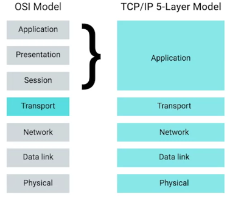

La capa de aplicación
La capa de aplicación
Al igual que con cualquier otra capa, los segmentos TCP contienen una sección de datos genéricos. Esta sección de
carga útil es, en realidad, todo el contenido de lo que las aplicaciones de datos quieran enviarse entre sí. En la
capa de aplicación, hay tantos protocolos diferentes en uso que no tendría sentido que los veamos. Aun así, un
concepto que puedes aprender sobre los protocolos de la capa de aplicación es que todavía están estandarizados
entre los tipos de aplicaciones. Para el tráfico web, el protocolo de capa de aplicación se conoce como HTTP. Todos
estos diferentes navegadores web y servidores web tienen que comunicarse usando las mismas especificaciones del
protocolo HTTP con el fin de garantizar la interoperabilidad.
La capa de aplicación y el modelo
OSI
El modelo OSI o modelo de interconexión de sistemas abiertos. Es importante entender este modelo junto con nuestro
modelo de cinco capas porque es el que está definido más rigurosamente.
El modelo OSI tiene siete capas, es decir, introduce dos capas adicionales entre nuestras capas de
transporte y de aplicación.
La quinta capa en el modelo OSI es la capa de sesión. El concepto de una capa de sesión es que es
responsable de cosas como facilitar la comunicación entre aplicaciones reales y la capa de transporte. Es la parte
del sistema operativo que toma los datos de la capa de aplicación sin encapsular de todas las capas por debajo de
ella y los transfiere a la siguiente capa del modelo OSI, la capa de presentación.
La capa de presentación es responsable de asegurarse de que los datos no encapsulados de la capa
de aplicación puedan ser cabalmente comprendidos por la aplicación en cuestión. Esta es la parte de un sistema
operativo que podría manejar el cifrado o la compresión de datos.
Si bien estos son conceptos importantes a tener en cuenta, te darás cuenta de que no hay ninguna encapsulación en
curso. Es por eso que en nuestro modelo agrupamos todas estas funciones en la capa de aplicación.

 Índice
Índice